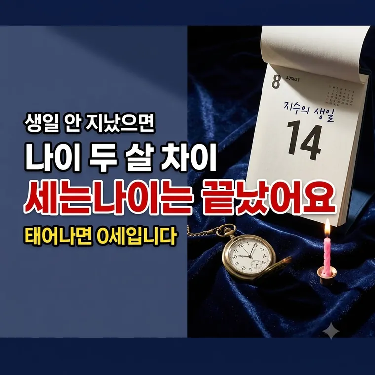

만 나이 계산법 총정리: 세는나이·연나이 차이점과 술·담배 연나이 예외 기준
2023년부터 나이는 만 나이로 통일됐습니다. 그런데 술이나 담배를 살 때는 아직도 태어난 해로 따집니다. 어디에 무엇을 쓰는지 정리해 봅니다.

나이를 세는 방법이 세 가지였습니다
| 구분 | 세는 방법 |
|---|---|
| 세는나이 | 태어나면 1세, 해가 바뀌면 한 살 |
| 연 나이 | 현재 연도 − 태어난 연도 |
| 만 나이 | 태어나면 0세, 생일마다 한 살 |
세 가지가 섞여 쓰이다 보니 같은 사람의 나이가 셋으로 말해졌습니다. 2023년 6월 28일부터 행정과 민사에서 쓰는 나이가 만 나이로 통일됐습니다.
계산은 생일이 지났는지만 보면 됩니다
현재 연도 − 태어난 연도
생일이 아직 안 지났다면
현재 연도 − 태어난 연도 − 1
생일 당일부터 한 살이 더해집니다. 생일 전날 자정이 지나면 바로 올라갑니다.
차이가 한 살일 때와 두 살일 때
세는나이와 비교하면 이렇게 갈립니다.
| 구분 | 세는나이와 차이 |
|---|---|
| 올해 생일이 지났다 | 한 살 적음 |
| 올해 생일이 아직 안 지났다 | 두 살 적음 |
세는나이 — 37세
연 나이 — 2026 − 1990 = 36세
만 나이 — 생일 전이므로 2026 − 1990 − 1 = 35세
생일이 늦은 사람일수록 체감 차이가 큽니다. 12월생이면 1년의 대부분을 두 살 차이로 지냅니다.
아직 연 나이를 쓰는 곳
만 나이로 통일됐다고 해서 전부 바뀐 것은 아닙니다. 사람을 묶어서 관리해야 하는 분야는 연 나이를 그대로 씁니다.
| 분야 | 기준 |
|---|---|
| 술·담배 구매 | 19세가 되는 해의 1월 1일부터 |
| 병역판정검사 | 19세가 되는 해 |
| 초등학교 입학 | 만 6세가 되는 해의 다음 해 3월 1일 |
생일과 상관없이 2007년생부터입니다.
2007년 12월생도 2026년 1월 1일부터 살 수 있습니다.
같은 반 친구끼리 나이가 갈리면 번거로우니 이렇게 묶어둔 것입니다. 편의점에서 신분증을 볼 때 생일이 아니라 앞 네 자리만 보는 이유입니다.
환갑과 칠순은 어떻게 되나
환갑은 원래부터 만 나이 기준입니다. 태어난 해의 간지가 한 바퀴 돌아오는 만 60세 생일입니다. 바뀐 게 없습니다.
칠순과 팔순은 세는나이로 치러온 집이 많습니다. 법으로 정한 게 아니라 집안 관습이라 하시던 대로 하면 됩니다.
서류에 적는 나이, 병원에서 묻는 나이, 보험 가입 나이 → 만 나이
술·담배, 병역, 학교 → 연 나이
잔치와 인사말 → 집안 관습대로
자주 묻는 질문
올해 생일이 지났으면 현재 연도에서 태어난 연도를 빼고, 아직 안 지났으면 거기서 1을 더 뺍니다. 태어날 때 0세이고 생일 당일 0시부터 한 살이 더해집니다.
올해 생일이 지났으면 한 살, 아직 지나지 않았으면 두 살 적습니다. 생일이 늦은 달일수록 두 살 차이로 지내는 기간이 깁니다.
2007년생부터입니다. 청소년보호법은 연 나이를 기준으로 하므로 19세가 되는 해의 1월 1일부터 생일과 상관없이 구매할 수 있습니다.
있습니다. 술·담배 구매, 병역판정검사, 초등학교 입학은 집단을 묶어 관리해야 하므로 연 나이를 그대로 적용합니다.